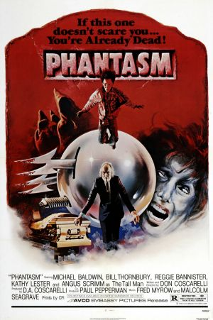

Привіт! Я студентка факультету прикладної математики та інформатики. У цьому портфоліо я зібрала багато цікавої інформації про свої навчання, захоплення та цілі. Сподіваюся, вам буде цікаво дізнатися про мене більше!
2013-2024
Моя школа запам'яталась хорошими викладачами ,які завжди були готові допомогти,якщо щось було незрозуміло,дружнім класом і великою кількістю творчої діяльності
Прикладна математик та інформатика
3 курс
Цей предмет добре розвиває логіку та деякі частини з нього можна було використовувати в подальшому в програмуванні
Цей предмет був цікавим ,тому що він пояснював методи розв'язання різних задач лінійної алгебри за допомогою алгоритмів
Ця дисципліна була цікавою тим,що можна було дізнатись про використання ймовірності в різних сферах а також ,наприклад,візуалізувати якісь статистичні дані і проаналізувати їх
Робота з с++
Розробка ігор на Godot
Адаптивність
Командна робота
Доброта


хз1
хз2

хз3
хз4

хз5
1994
5/5
2018
4/5

2012
5/5

1979
4/5
З 2015 року займаюсь волонтерством в громадській організації "Ніжність. Допомагаю дітям з фізичними вадами та безпосередньо аутизмом соціалізуватись та розвиватись в творчості,кулінарії та інших сферах"
Більше року навчаю дітей. Викладаю математику. Проводжу індивідуальні та групові заняття


Небеса не мають улюбленців.
— Еріх Марія Ремарк
| День тижня | Час | Назва дисципліни | Тип заняття |
|---|---|---|---|
| Понеділок | 8:30 – 9:50 | Архітектура комп'ютерних систем та мереж | Лекція |
| 10:10 – 11:30 | Чисельні методи | Лекція | |
| 11:50 – 13:10 | Історія рок-музики | Лекція | |
| Вівторок | 8:30 – 9:50 | Використання систем комп'ютерної математики | Лекція |
| 10:10 – 11:30 | Використання систем комп'ютерної математики | Практика | |
| Середа | 8:30 – 9:50 | Програмне забезпечення | Практика |
| 10:10 – 11:30 | Бази даних та інформаційні системи | Практика | |
| 11:50 – 13:10 | Основи веб програмування | Лекція | |
| 13:30 – 14:50 | Основи веб програмування | Практика | |
| Четвер | 8:30 – 9:50 | Бази даних та інформаційні системи | Лекція |
| 10:10 – 11:30 | Архітектура комп'ютерних систем та мереж | Практика | |
| 11:50 – 13:10 | Історія рок-музики | Практика | |
| П'ятниця | 8:30 – 9:50 | Програмне забезпечення | Лекція |
| 10:10 – 11:30 | Чисельні методи | Практика |